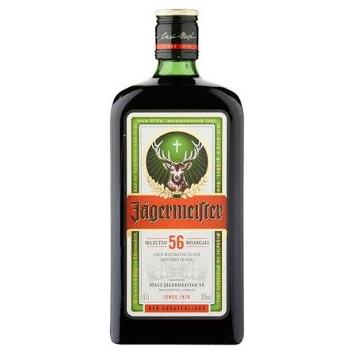

Skiën is voor miljoenen mensen wereldwijd de ultieme winteractiviteit, omdat het de perfecte combinatie biedt van sportiviteit, natuur en pure adrenaline.
Het is veel meer dan alleen een sport; het is een complete levensstijl en een ontsnapping aan de dagelijkse sleur.
Hieronder lees je waarom deze sport zo'n enorme aantrekkingskracht heeft en wat het zo bijzonder maakt.
Het gevoel dat je krijgt als je boven op een bergtop staat, is met weinig te vergelijken.
De strakblauwe lucht, de knisperende kou en een oneindig deken van witte sneeuw zorgen voor een diepe rust.
Het contrast tussen de absolute stilte op de top en de snelheid waarmee je daarna naar beneden raast, geeft een kick die verslavend werkt.
Het is een actieve vorm van mindfulness: als je skiet, ben je zo gefocust op je bochten en de ondergrond dat je nergens anders aan kunt denken.
Skiën is een intensieve full-body workout. Hoewel het er soms vloeiend en moeiteloos uitziet, moeten je spieren hard werken.
De volgende voordelen zijn verbonden aan het skiën:
• Spierkracht: Vooral je bovenbenen, billen en core worden constant aangespannen om in balans te blijven en bochten te maken.
• Conditie: Een hele dag op de piste verbrandt honderden calorieën en verbetert je cardiovasculaire gezondheid.
• Vitamine D: Zelfs in de winter pik je op de berg heel wat zonnestralen mee, wat goed is voor je energieniveau en je immuunsysteem.
Een wintersportvakantie draait om veel meer dan alleen de uren op de latten. De unieke cultuur rondom het skiën maakt de ervaring compleet. Rond het middaguur strijk je neer bij een gezellige berghut voor een stevige lokale maaltijd (zoals Kaiserschmarrn in Oostenrijk, kaasfondue in Frankrijk of een goede pasta in Italië).
Zodra de liften sluiten, transformeert het skigebied.
Voor velen is de après-ski net zo belangrijk als het skiën zelf.
Of je nu kiest voor houten skihutten met meezingers in Oostenrijk of een stijlvolle loungebars in de Franse Alpen; het verbroederende gevoel om samen met vrienden of familie de dag af te sluiten is uniek.
Skiën verveelt nooit omdat je jezelf altijd kunt blijven uitdagen.
Binnen de sport zijn er talloze disciplines:
• Pisteskiën: Het carven op strak geprepareerde sneeuw.
• Freeriden / Off-piste: Het zoeken naar diepe, onafgetrapte poedersneeuw buiten de gemarkeerde paden.
• Freestyle: Het maken van sprongen en trucs in het funpark.
• Cross-country skiing: Het rennen op sneeuw met speciale vellen onder de ski's, om vervolgens ver weg van de drukte af te dalen.
Het mooie aan skiën is dat het toegankelijk is voor alle leeftijden. Kinderen rollen vaak vanaf hun derde of vierde jaar al spelenderwijs de skiklasjes in, terwijl kranige zeventigers nog steeds soepel de rode pistes afdalen. Het is een van de weinige vakanties die je perfect met drie generaties tegelijk kunt vieren.

Na een dag op de piste is een goeie Jägerbom altijd welkom.
Klik op de afbeelding om Jägermeister te kopen.
Wil je weten welke pistes beschikbaar zijn in Ischgl?
Klik hier voor de pistekaart van IschglDeze website biedt extra informatie over het skigebied.